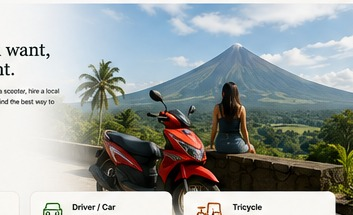

Scooter rental
Independent exploring and short day trips.
₱500/dayPlanning rate. Availability and rental conditions confirmed first.YOUR OWN FREEDOM
Albay is much more enjoyable when you are not tied to one fixed tour. Ride a scooter, use a local tricycle or ask us to arrange a private driver when you want more comfort.

EXPLORE YOUR WAY
Take a scooter for a quiet beach, ride into Tabaco, stop somewhere because it looks interesting, or ask a driver to take care of the roads while you enjoy the day.
You choose the pace. We can help with the practical parts and local suggestions when you need them.
TRANSPORT OPTIONS
Independent exploring and short day trips.
₱500/dayPlanning rate. Availability and rental conditions confirmed first.Comfortable transport for longer routes or day trips.
around ₱3,000/dayPlanning estimate. Final price depends on route and waiting time.Perfect for nearby errands, restaurants and local trips.
Ask for local rateShort trips are normally arranged locally depending on distance.WHERE COULD YOU GO?
Viewpoints, ATV, Cagsawa and scenic roads.
Quiet beaches, boat trips and the Bacacay coast.
Stop where local people actually shop and eat.
Build a day around waterfalls, views and spontaneous stops.
YOUR ROAD · YOUR DAY
Tell us how you like to travel and we can suggest the transport that makes sense.
Add transport to my stay